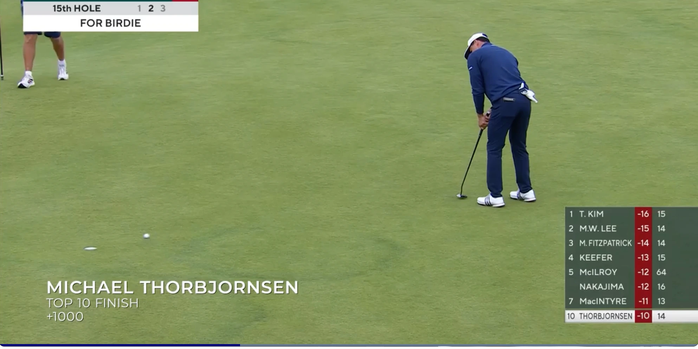

Tom Kim ended his PGA TOUR drought at the Genesis Scottish Open, putting together a clinical weekend performance at the Renaissance Club to claim the trophy. The victory represents a massive shift in Kim's season, vaulting him from 58th to 32nd in the FedExCup standings and elevating him into the top 35 of the Official World Golf Ranking. Crucially, the win grants Kim a full PGA TOUR exemption running through the 2028 season. Behind him, the final three Open Championship qualifying spots for Royal Birkdale were secured by Johnny Keefer (T3), Michael Thorbjornsen (T7), and Victor Perez (T9), while defending champion Chris Gotterup finished in a tie for 11th, six shots off the pace.

The Renaissance Club Specialization Pays Off
Tom Kim did not arrive in East Lothian looking like a player on the verge of resetting his competitive trajectory. While his play had flashed potential in select stretches—most notably during a resilient run at the U.S. Open—the broader season had left him on the outside looking in regarding the PGA TOUR's premium, limited-field signature events. Entering the week at No. 58 in the FedExCup standings, Kim arrived at the Genesis Scottish Open knowing he needed a substantial result to redirect the final month of his season.
In that context, the Renaissance Club was the ideal venue. The Tom Doak design has treated Kim exceptionally well throughout his young career. Since making his debut in Scotland in 2022, he has compiled a stellar course history, logging a third-place finish, a tie for sixth, a tie for 15th, and a tie for 17th. When he put himself in position on the leaderboard heading into Sunday's final round, the development felt entirely natural rather than an unexpected anomaly. This time, he did not just contend; he closed out the field to claim the title.
"Entering the week at No. 58 in the FedExCup, Kim arrived knowing he needed a substantial result. He found it on turf he knows better than almost anyone."
The Math of the Exemptions
The immediate return on Kim's victory extends far beyond a physical trophy and the winner's check. In the modern PGA TOUR ecosystem, status is the ultimate currency, and Kim's performance dramatically rewrote his long-term security. The victory lifts him from 58th to 32nd in the FedExCup standings, placing him in an advantageous position to secure a spot in the TOUR Championship at East Lake.
Furthermore, the win is expected to push Kim from 66th into the top 35 of the Official World Golf Ranking, ensuring his presence in major championships and international showpieces. Most importantly, the victory guarantees Kim a PGA TOUR exemption through the 2028 season. For a player who had openly started to feel the claustrophobia of a mid-tier ranking, the victory is a complete operational reset.
Birkdale Invites Secured
Beyond the race for the trophy, the Genesis Scottish Open served as the high-stakes final stage for Open Championship qualifying. Three spots at Royal Birkdale were up for grabs for the highest finishers not already exempt, leading to intense subplots on the back nine on Sunday afternoon.
Johnny Keefer led the qualifying contingent with an impressive T3 finish, earning his first career Open Championship start. Joining him is former amateur standout Michael Thorbjornsen, who fought to a T7 finish to book his ticket to Birkdale. France's Victor Perez claimed the final qualifying spot with a T9 finish, bringing tournament experience as a two-time Open competitor. Both Keefer and Thorbjornsen will make their Open Championship debuts next week, representing a significant career milestone for two of the tour's rising talents.
Gotterup's Title Defense Falls Short
Chris Gotterup arrived in Scotland with a realistic chance at a historic double. As the defending champion and a player chasing consecutive PGA TOUR victories, Gotterup carried momentum into the weekend. However, the closing holes on Sunday proved too steep a hill to climb, and he was unable to mount a sustained charge to pressure Kim's lead.
Gotterup's final-round efforts culminated in a tie for 11th, leaving him six shots behind Kim's winning mark. While the title defense ultimately fell short of a trophy, Gotterup walks away with a strong week of links golf and heads to Royal Birkdale with another major appearance immediately ahead of him.